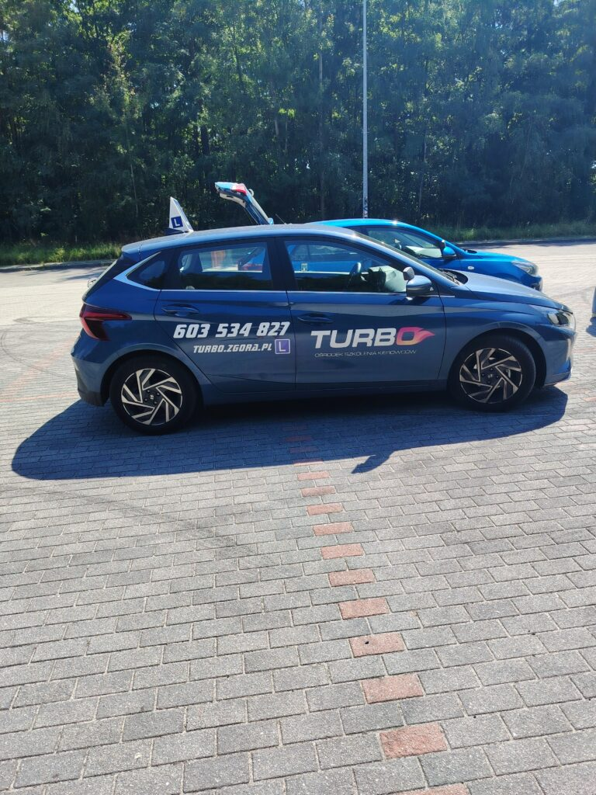
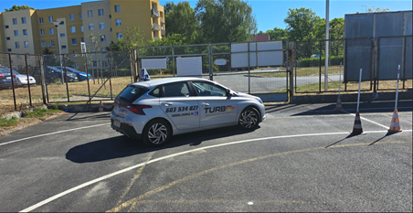
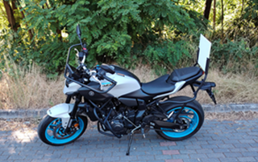
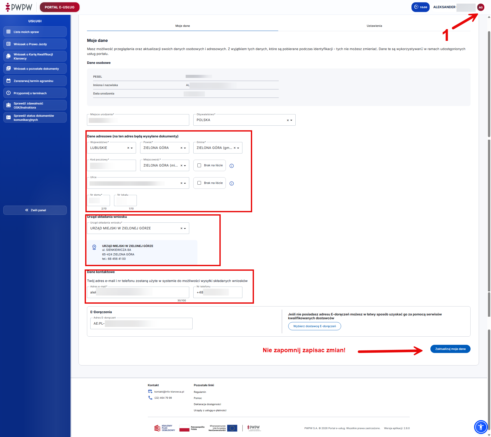
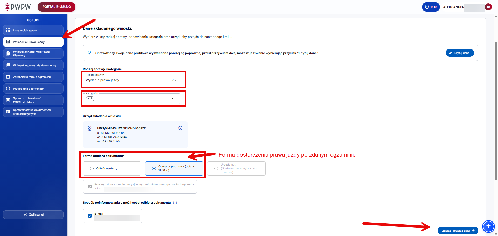
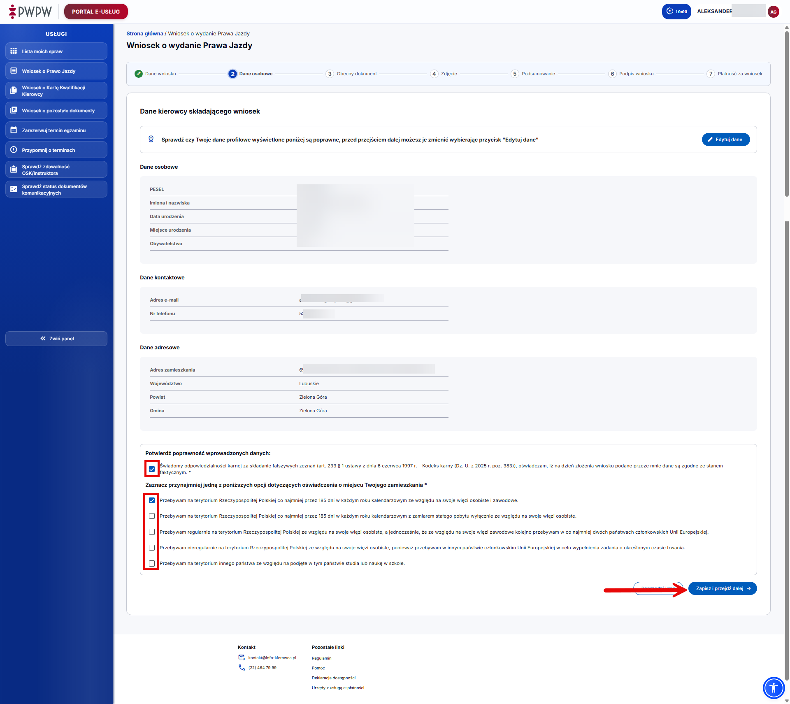
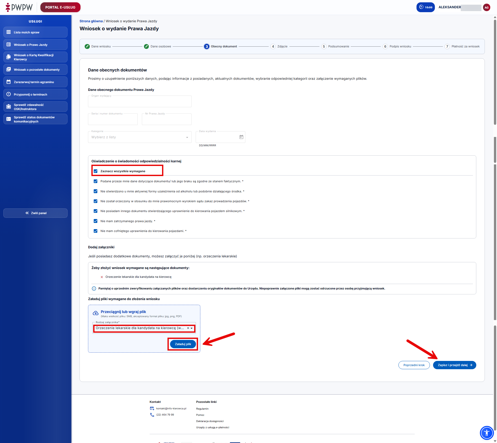

Najpopularniejszy01
Kategoria B
Kurs na samochód osobowy z jazdami na Hyundaiu i20 - identycznym jak na egzaminie.
Kursy B, AM, A1, A2 i A. Teoria w formie e-learningu na akredytowanej platformie, jazdy dopasowane do Twojego grafiku.
Kurs na samochód osobowy z jazdami na Hyundaiu i20 - identycznym jak na egzaminie.
Kurs na motorower Romet City50 (2026), z przygotowaniem do egzaminu na kategorie AM.
Kurs na motocykl Honda CB125F, z możliwością zdawania na naszym sprzęcie.
Yamaha MT-07 lub Honda CB500F, jazdy na znanym sprzęcie i przygotowanie pod egzamin.
Kurs na Yamaha MT-07 (2025), z jazdami przygotowującymi do egzaminu kategorii A.



Samochód i motocykle są dopasowane do poszczególnych kategorii, a teoria odbywa się w formie e-learningu - uczysz się swoim tempem.
Szkolimy kandydatów na kierowców kategorii B, AM, A1, A2 i A. Stawiamy na praktyczne przygotowanie do egzaminu oraz wypracowaniu dobrych nawyków na drodze. Wspieramy kursantów od pierwszej teorii do zdania egzaminu.
Zero krzyku. Budujemy pewność małymi krokami i dajemy przestrzeń na pytania. Ważne, abyś zrozumiał, a nie tylko powtarzał.
Rano, po pracy, szkole, w weekend. Wspólnie znajdziemy godziny, które naprawdę Ci pasują.
Od pierwszej teorii do egzaminu jesteśmy po Twojej stronie i odbieramy telefon.
Każdy z nas uczy trochę inaczej. Wspólny mianownik? Spokój, cierpliwość i konkret.
Placeholder na krótkie bio instruktora.
Placeholder na krótkie bio instruktora.
Placeholder na krótkie bio instruktorki.
Placeholder na krótkie bio instruktora.
Placeholder na krótkie bio instruktora.
Placeholder na krótkie bio instruktora.
Placeholder na krótkie bio instruktora.
Placeholder na krótkie bio instruktora.
Placeholder na krótkie bio instruktorki.
Przygotuj dokumenty, załóż PKK i skontaktuj się z nami. Resztę ustalimy wspólnie.
Uzyskaj orzeczenie lekarskie u lekarza uprawnionego do badań kierowców.
Najszybsza opcja - jeżeli posiadasz Profil zaufany lub mObywatel, złóż wniosek online, dodaj skan zdjęcia, podpisu i orzeczenia, a następnie odbierz numer PKK. Wniosek możesz złożyć również osobiście w odpowiednim urzędzie.
Gdy otrzymasz numer PKK, zadzwoń do nas. Ustalimy dalsze kroki i termin kursu.
Udaj się do lekarza uprawnionego do badań kierowców i uzyskaj orzeczenie lekarskie.
Lekarz współpracujący z OSK Turbo:
lek. Leszek
Kozieł, ul. Fabryczna 17E lok. 6. Zielona Góra, tel. 502 252 263.
Skontaktuj się z lekarzem telefonicznie/przez SMS +48 502 252 263, aby potwierdzić termin i godziny przyjęć.
Pamiętaj, aby po nadaniu numeru PKK online dostarczyć do urzędu oryginał orzeczenia lekarskiego, możesz to zrobić również pocztą na adres Wydziału Komunikacji. (dla Zielonej Góry jest to Wydział Komunikacji Zielona Góra, ul. Sienkiewicza 8a, 65-443 Zielona Góra)




Gdy otrzymasz numer PKK, zadzwoń do nas, wyślij SMS, wiadomość na Whatsapp lub e-mail. Podaj numer PKK i ustalmy dalszcze szczegóły.
Wspólnie ustalimy terminy teorii i jazd oraz dalsze formalności.
Zobacz, co mówią o nas nasi Kursanci. Więcej opinii
Skontaktuj się z nami - chętnie odpowiemy i pomożemy rozwiać wszelkie wątpliwości.
Wypełnij krótki formularz, a odezwiemy się z informacjami o kursie.